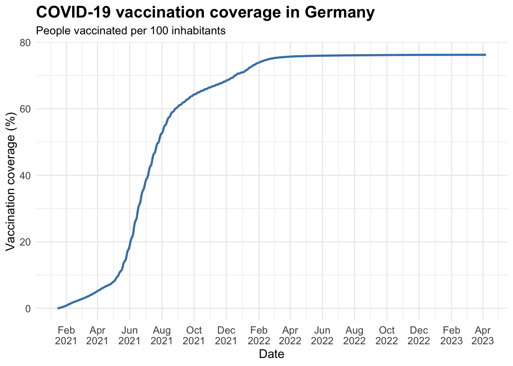
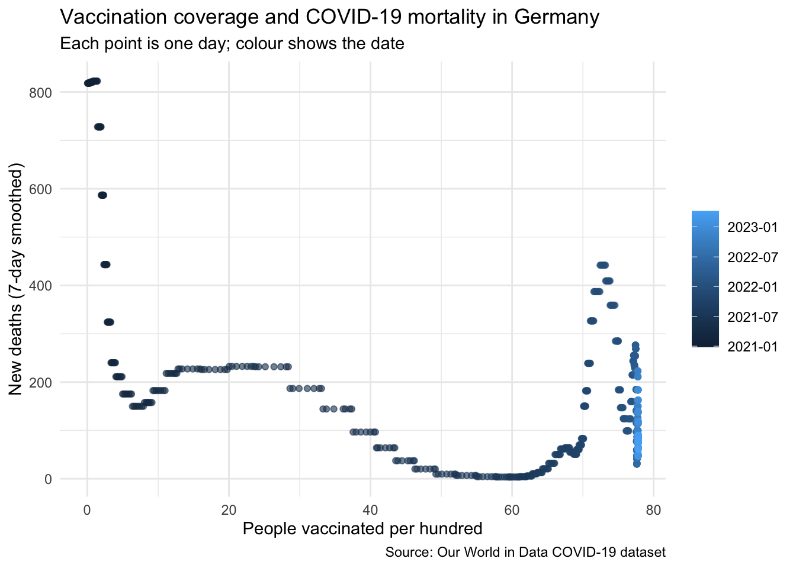
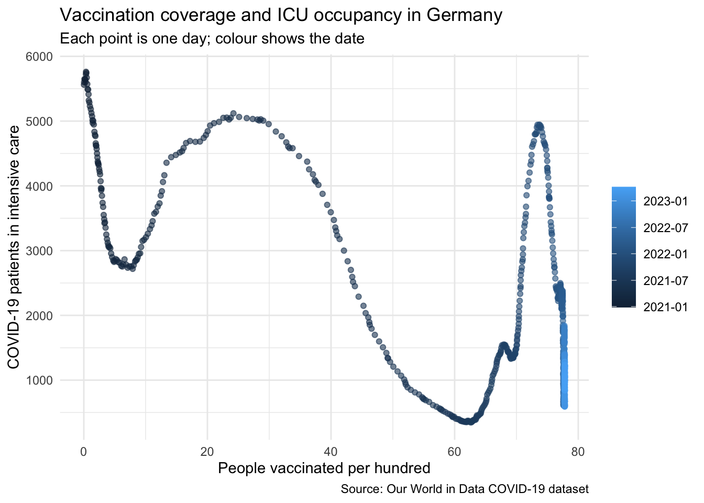

Results
Research Question 1
How did COVID-19 vaccination coverage in Germany change over time?
Figure 1 shows the development of full COVID-19 vaccination coverage in Germany over time. Vaccination coverage started to increase in early 2021, when vaccination reporting became available in the dataset. During the first half of 2021, the curve rises steeply, indicating the main rollout phase of the vaccination campaign.
After this initial phase, the increase in full vaccination coverage slowed down considerably. Towards the end of 2021 and during 2022, the curve approaches a plateau of roughly 76–78% of the population. From this point onward, only small additional increases are visible.
Figure 2 shows the smoothed number of daily new vaccinations. In contrast to cumulative vaccination coverage, this variable does not increase continuously. Instead, it shows distinct waves of vaccination activity.
The largest peak occurs during the initial rollout in 2021. After this peak, daily vaccination activity declines strongly. Later increases are visible, but they are much smaller than the first peak. These later waves may correspond to additional vaccination phases, such as booster campaigns.
Overall, Germany experienced a rapid increase in full vaccination coverage during 2021, followed by a stabilization at around 76–78%. Daily vaccination activity was highest during the initial rollout and declined substantially afterwards.
Our descriptive analysis indicates that vaccination coverage in Germany increased rapidly during the first vaccination campaign in 2021 and stabilized afterwards. This answers the first research question and provides the basis for investigating whether vaccination coverage was associated with disease severity in the following analyses.
Research Question 2
Answering RQ2a: Are higher vaccination rates associated with lower COVID-19 mortality?

The scatter plot shows the negative association quantified above (r ≈ -0.53): days with higher vaccination coverage tended to have lower smoothed daily deaths. The date colouring also makes the limitation of this comparison visible. Because vaccination coverage only ever increases, the x-axis is closely tied to calendar time: points on the left are from early 2021 and points on the right from 2022/23. The high-mortality points at low coverage belong to the winter wave of early 2021, while the winter wave of 2021/22 appears as a band of elevated deaths at around 60–70 per hundred. So the negative correlation mixes two things we cannot separate here: the protective association of vaccination and everything else that changed over time (variants, seasonality, and restrictions captured in stringency_index).
Answer to RQ2a: Yes — in our data, higher vaccination rates are associated with lower COVID-19 mortality (r ≈ -0.53, 95% CI -0.58 to -0.48). As stated in our analysis plan, this is an exploratory, associational result: because vaccination coverage rises monotonically over time, calendar time is a strong confounder, and we do not interpret this association causally.
Answering RQ2b: Are higher vaccination rates associated with lower ICU occupancy?

The association is negative and somewhat stronger than for mortality (r ≈ -0.65): days with higher vaccination coverage tended to have fewer COVID-19 patients in intensive care. The same time-confounding caveat applies as in RQ2a. In addition, our domain-informed quality checks flagged that the minimum ICU value of exactly 100 looks like a reporting lower bound; since the values in the overlap window start at around 350 patients, this artefact does not affect the analysis here, but we note it for completeness.
Answer to RQ2b: Yes — in our data, higher vaccination rates are associated with lower ICU occupancy (r ≈ -0.65, 95% CI -0.69 to -0.61). As with RQ2a, this is an exploratory, associational finding and not evidence of a causal effect, because vaccination coverage and calendar time are inseparable in this dataset.
How stable is the association over time?
To make the time-confounding limitation concrete rather than only stating it, we re-computed the correlations within calendar years:
# A tibble: 4 × 4
year n cor_deaths cor_icu
<fct> <int> <dbl> <dbl>
1 2020 5 NA 0.755
2 2021 365 -0.498 -0.517
3 2022 365 -0.201 -0.806
4 2023 97 -0.429 -0.0347Within single years the correlations are noticeably weaker and unstable (for example, the ICU correlation is strong in 2022 but close to zero in early 2023, while the mortality correlation weakens in 2022). This confirms that a large part of the overall negative correlation is driven by the long-run trend — coverage rising while the pandemic waned — rather than by a stable day-to-day relationship. It is exactly the behaviour our analysis plan anticipated when it named time as the main confounding risk, and it is the reason we report RQ2 as exploratory.